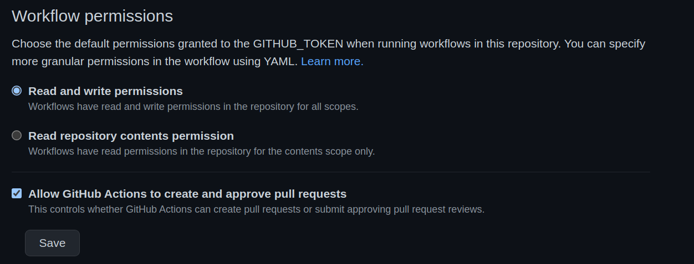

After going through a bit of an intensive setup, I thought of writing up my journey & difficulties I faced while setting up this blog so that it could help others who might start later.
Motivation
I was looking for ways to have my tiny little place on the internet & therefore scouted for feasible options. As a Data Scientist, I interact with code regularly and (Jupyter) Notebooks are part of our DNA :stuck_out_tongue:. So the criteria that I had set for myself was that whatever platform I choose, it has to be (a) very code friendly, (b) easy to maintain, and (c) relatively affordable (if possible, even free).
Quest for the right tool
I’m a big fan of Notion and use it for almost everything in my private life. So I initially considered setting up my blog with Super as you can create websites straight away from Notion pages. Though it looks great, the pricing is something that I’m still not comfortable with (yet).
Then there’s Medium, which provides a nice writing experience but only as long as you don’t have much code in your content. Though affordable, just like Super, it has mediocre support for code formatting natively & you have to optimize your content well ahead with a lot of GitHub gists. It also has no out-of-the-box support for mathematical symbols/equations. Read more about its shortcomings from a developer perspective in a great post from Prasanth Rao here.Though, I might still consider using this service to post once in a while to increase my outreach. We’ll see how it goes.
These first two options are great if you don’t write code-heavy posts (that often) and are also very beginner friendly. But unfortunately, both of them are not free and also don’t fit well for my use case. Besides, where’s the fun if you don’t build stuff by tweaking stuff? :wink:
I then decided to give GitHub Pages a try since it’s a free static site generator service from GitHub. One need not know (much) about HTML/CSS and can simply write content in human readable Markdown format which gets rendered as a webpage. Besides, you get a nice revision history of your blog as everything would be version controlled with GitHub. In combination with Jekyll (that powers Github pages), there’re numerous themes & templates to choose from and so much customization that can be made via styles, CSS, etc. I can easily convert Jupyter notebooks into markdown scripts and have them rendered with Jekyll. Since one can display code snippets, markdown cells, and embed 3rd party content within Jupyter notebooks, I intended to go with this as it fulfilled most of my needs… until I rediscovered Fastpages.
Fastpages, from fast.ai, turbocharges Jupyter notebooks by automating the process of creating blog posts from notebooks via Github Actions. We can write content in notebooks markdown files, or even Word documents and have them rendered as a web page. It offers so much more functionality on-top like code folding, interactive plots on a static web page via embeddings, comments & emoji support :heart_eyes_cat:, etc. For an excellent introduction, please refer to the official documentation.
That has convinced me & so now you’re reading this site built with Fastpages. 🎉
Setup
Fortunately, Fastpages is very well documented and it is highly recommended that you go through that first. However, you might still encounter some problems because of some outdated documentation, and if in case you want to test it locally on Linux systems, which is what I cover here. So, without further ado, let’s dive in.
- Think of a name for your blog. It can just be
bloglike mine. - Go through the setup instructions detailed here.
- It might happen that once after you try to generate a copy as per the instructions above, a PR won’t be automatically generated. The debug instructions in the README are a bit outdated. In this case, go to the
Settings -> Actions -> Generalsection of your newly created blog repository and ensure that you haveRead and write permissionsenabled and the last checkbox is ✔️ like :point_down:. HitSave.  - Go to the
Actionstab and you might see a failed section. Ignore what it is for now and click that failed one. Most likely it’d be aSetupworkflow failure. On the top right, from the drop-down menuRe-run jobs, selectRe-run failed jobs. - Once the above steps are all ✅, go to the
Pull Requeststab and wait for some time. Your first PR would soon be automatically created. You can also optionally check the progress under theActionstab if desired. - Now follow the instructions in the PR and merge it.
- It might happen that once after you try to generate a copy as per the instructions above, a PR won’t be automatically generated. The debug instructions in the README are a bit outdated. In this case, go to the
- Congratulations :confetti_ball:. Your blog would soon be up & running at
{your-username}.github.io/{repo-name}. Now you can make changes directly on GitHub online or create notebook/markdown/Word files locally and simply upload them as per the instructions into the right folder. Your blog would be updated just like that (in a few minutes). 🪄
Test Locally
In most of the cases, you might want to check how your post looks like before you publish to make sure it looks as you intend it to be, especially when it contains data from different sources or in different formats. This is when having the option of testing it locally comes in handy. With Fastpages, you can run your blog locally to see how it would look like so that you can fix any nitty gritty details before pushing it online.
Fastpages again provides a good documentation on how to test it locally with the help of Docker . It has worked fine on my Mac but installing/upgrading Docker on Linux is still nowhere as smooth as on Mac and hence I had to go through a bit of digging into forums to make it work on my Ubuntu machine especially on the latest version 22.04 LTS. So, going forward I’d cover only this scenario.
For Mac/Windows, all you need is Docker installed and simply run make server from the root level of the repo.
- Docker Desktop for Linux (DD4L) is still in beta and is only available for
21.XXversions of Ubuntu. So if you have that, go ahead with the setup below. If not, skip to the next step.- Follow the Docker installation instructions from the official documentation.
- If you had installed Docker via
Snapor you had a previous preview version of Docker Desktop installed, it’s recommended to uninstall them completely. See more here for help on how to do that.
- Since Ubuntu 22.04 LTS is not yet supported, I ended up installing (not Docker Desktop) from here.
- Check if you have
docker-composeinstalled by doingwhich docker-composeordocker-compose -v. If not, install it as a standalone binary.- I’m not sure if it also installs
Makebut if it doesn’t, please install it too following the instructions here.
- I’m not sure if it also installs
- Run
make serverfrom the top level of your repository.- Your Jupyter server would be available shortly at
http://localhost:8080/treeand it would take a bit of time for your blog to be available underhttp://localhost:4000/{your-repo-name}. Be patient. :relieved:
- Your Jupyter server would be available shortly at
if make server doesn’t work because of permission issues, try sudo make server instead
Congratulations once again! :tada: You now have a local version of your blog running. You can create new posts and have them rendered almost instantly :sparkles:. Once you’re happy with the content & format, you can push it (preferably in a new branch and making a PR so that your main/master branch is unaffected). If you feel a bit adventurous, try customizing your blog more to your liking by changing fonts/styles, etc.
If you like this blog’s customization, checkout its repo esp. its custom-style.scss. May be I’ll write another post detailing it.
Good Luck & Happy Blogging! ❤️